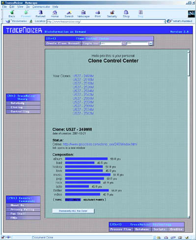

| Controlling
the Clones TraceNoizer is a webbased tool. In addition to the mechanisms for the construction of clones discussed in "Cloning the Databody" TraceNoizer also allows the targeted removal of any clone. This means that the files that make up that clone are being deleted. But since pages can be cached by search engines, the clone is not really "dead" or completely removed from the Internet. So by "killing" a clone you do influence the databody because files cannot be accessed anymore, but it is not possible to estimate exactly how this influences the databody, since the databody is defined as a mass of data that is constantly being processed and reprocessed by the net (as discussed in the chapters above).  |